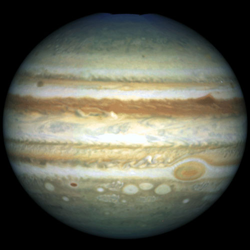

|
|
 JupiterThe Giant planets as Jupiter do not have the same layered structure that the terrestrial planets do. Their evolution was quite different than that of the terrestrial planets, and they have less solid material. Jupiter's interior composition is primarily that of simple molecules such as hydrogen and helium, which are liquids under high pressure environments found in the interiors of the outer planets, and not solids. Motions in the interior of Jupiter contribute in a very special way to the development of the powerful and extensive magnetosphere of Jupiter. Heat generated within Jupiter contributes to the unusual motions of the atmosphere. Jupiter is the king of planets because it is not only has the most dymanic atmospheric motion, but also the most riveting cloud patterns and storms, and the most majestic appearance of the giant planets. The dramatic appearance of Jupiter stems partially because the composition of Jupiter's atmosphere includes complicated molecules such as ammonia and methane, as well as simple molecules such as helium, hydrogen, and sulfur. The composition also includes exotic molecules such as germain. The atmosphere of Jupiter is only a narrow surface layer, compared to the vast interior of the planet. The three clouddecks of Jupiter are to be found at different levels in the troposphere, while hazes of smog can be found higher in the atmosphere. Jupiter's magnetosphere is very special. It is the biggest thing in the entire solar system. Not only is it big enough to hold all of Jupiter's moons, but the sun itself could fit inside. It goes all the way to Saturn. Jupiter has 60 moons and a ring system. |